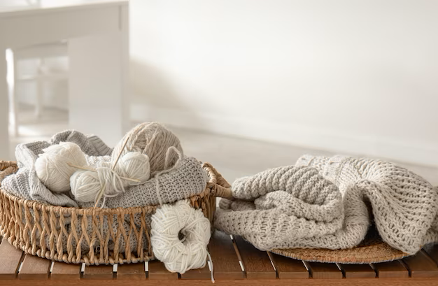

Start Your New Hobby
Crocheting is a fun hobby

Tips to Start New Hobby
Crocheting is a fun hobby that allows you to make beautiful, unique, and practical creations. Plus, it is good for you! Once you have a handle on a few different stitches and techniques, crocheting can be meditative and relaxing, which can reduce stress and anxiety. However, there is a learning curve for any new hobby. So if you are picking up your crochet hook and yarn for the first time, do not get discouraged. Here are a few key tips for how to crochet for beginners.